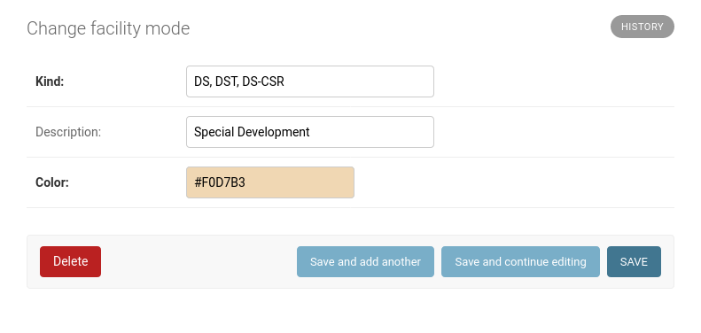
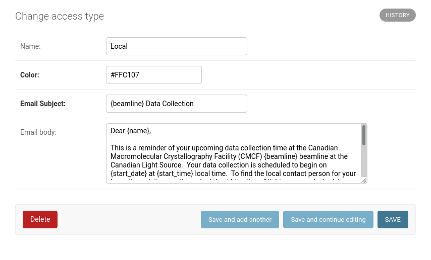
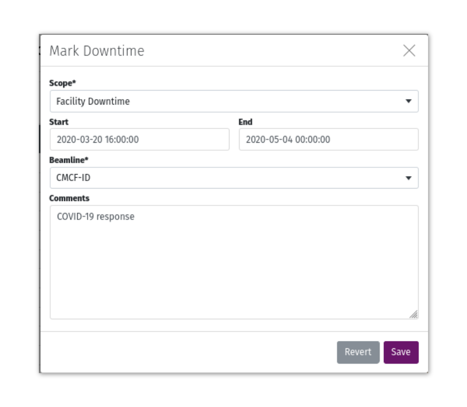
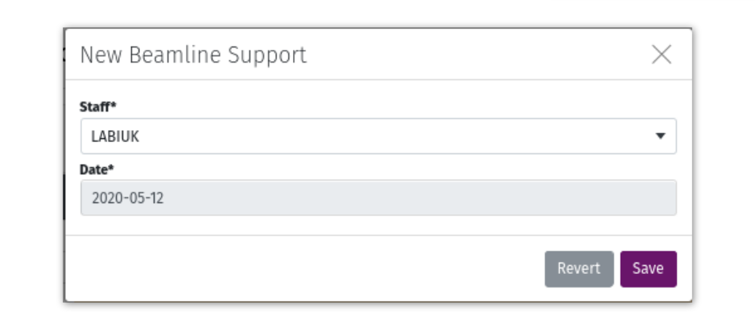
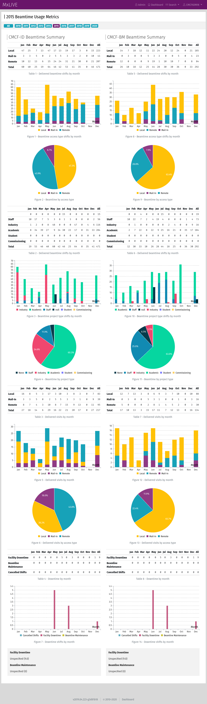

Scheduling¶
To enable the optional scheduling app in MxLIVE, make sure the following line is included in your settings.py file:
LIMS_USE_SCHEDULE = True
By default, HOURS_PER_SHIFT is 8 (three shifts per day), but can be any factor of 24.
Facility Modes¶
Facility modes are fetched on-the-fly from an API providing a JSON response. These modes are used for colour-coded display on the MxLIVE schedule. Specify the location of the API in your settings.py file.:
FACILITY_MODES = "https://external.site.com/api/schedule/modes/"
The response should be formatted in the following way, containing these fields at a minimum:
[
{
"start": "2020-05-24T14:00:00Z",
"end": "2020-05-25T06:00:00Z",
"kind": "D",
}, ...
]
The “kind” value for each mode is used as a CSS class which is used to display background colours on the schedule. The colours by default are tailored to the modes provided by the USO at the Canadian Light Source, but can be tailored to any facility by editing Facility Modes through the Django administration site.
The kind can be an individual value, or a comma-separated list. These are the CSS classes that will be applied to shifts on the schedule to set the background color to Color. The description is used to build a legend at the bottom of the schedule.
Access Types¶
Access Types are defined through the Django administration site. The details provided in the form of Access Types informs the colour codes assigned to beamtime, and the template used to generate email notifications. Access Types are also used for beamline statistics.
For custom emails, the email subject and email body are strings formatted with the following information:
{name}= The account’s Contact Person or First Name Last Name (if no contact person is listed)
{beamline}= The scheduled beamline’s acronym
{start_date}= The start date of the beamtime
{start_time}= The starting time of the first shift of the beamtime
Beamtime¶
Beamtime is assigned to an account in MxLIVE. To schedule beamtime:
Select an unassigned shift as the first shift of the beamtime,
Select the final shift of the beamtime,
Complete and submit the form.
Note
If beamtime is scheduled during shifts that have already been assigned, the existing beamtime is either shortened to accommodate the new beamtime, or deleted completely if all shifts are being rescheduled.
Email Notifications¶
If Schedule Email Notification is selected, an email is scheduled for seven days prior to the start of the beamtime,
at 10am in the user’s timezone (if the user’s timezone cannot be determined based on the address in the account’s
profile, the TIME_ZONE specified in the settings.py file is used). If seven days prior to the beamtime falls on a
weekend, the email is scheduled for the preceding Friday.
Emails are sent to the Email Address (only editable by staff) and the Contact Email (user-editable) for the account. Click on the small “Mail” icon to the left of the scheduled beamtime to edit details about the notification, including the scheduled delivery time, email subject, and message.
Downtime¶
Downtime should be used to mark times when the beam was unexpectedly not available to users. The scope of the underlying issue can be marked as “Facility” or “Beamline”, with details included in the comments. Those comments are available in the Beamtime Summary statistics.
To schedule Downtime, first toggle the switch marked “CANC” in the top-right corner of the weekly calendar. Then select the first and last shift of the downtime, and complete the form.
User Support¶
Click on an empty cell in the “Staff” column to assign beamline support. Any MxLIVE account specified with the Project Type “Staff” can be scheduled for Beamline Support.
Public Schedule¶
The schedule is available to all MxLIVE users through the dashboard of their account. To display the MxLIVE schedule on a publicly visible website, insert the following HTML code:
<iframe src="https://example.com/calendar/view" style="overflow: hidden; width: 100%;" scrolling="no" frameborder="0"></iframe>
By default, usernames of scheduled accounts are visible on the public schedule. If extra confidentiality is required, the alias field in the user’s profile should be used. If the alias has a value, only the alias is visible publicly.
Statistics¶
Beamtime statistics are displayed side-by-side for multiple beamlines, and can be filtered by year.
